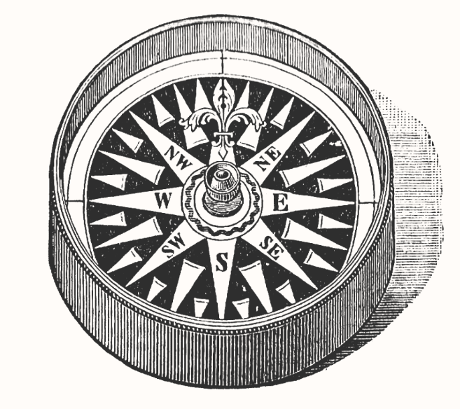
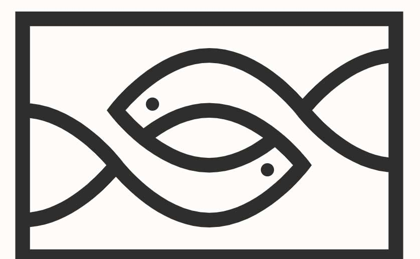
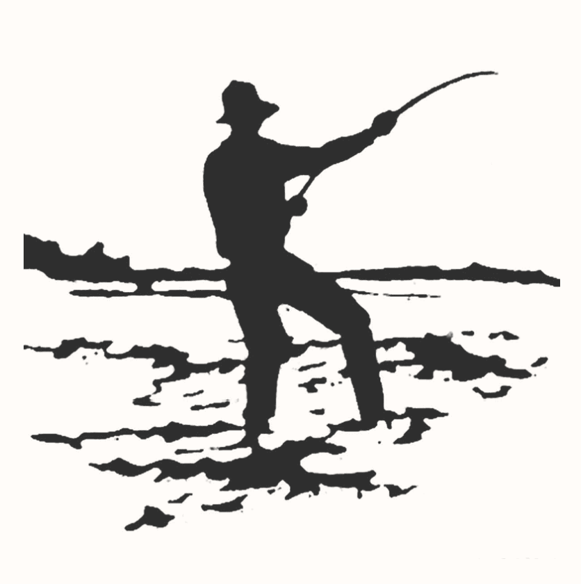
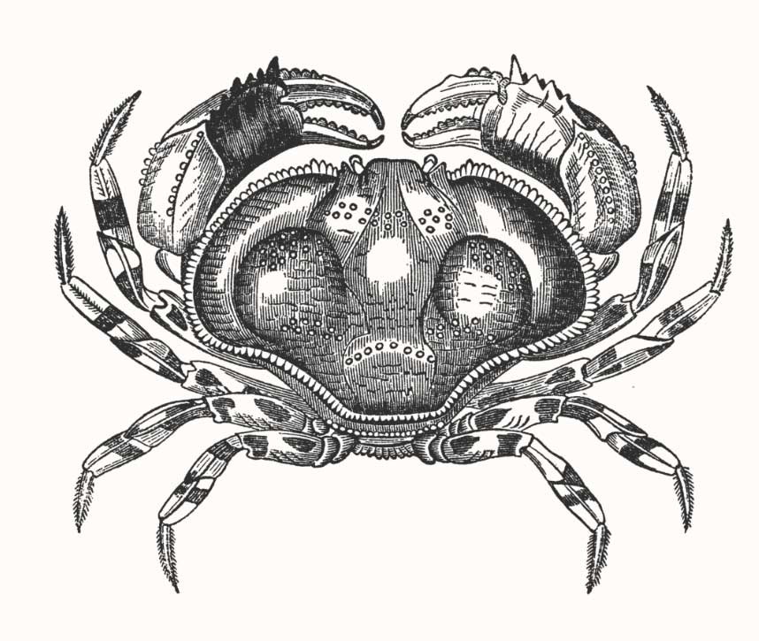

CATCH OF THE
DAY
FROM SEA TO PLATE
The latest harvest has yielded deliciously fresh seafood perfect for devouring on its own or as part of a scrumptious recipe. Here’s a seasonal favourite…
Full report on page 3
FIND US
BELCONNEN MARKETS
10 lathlain st, belconnen
Act 2617, Australia
Open wed-sun 8:00AM-6:00pm
Fyshwick Markets
12 DALBY ST, FYSHWICH ACT
2609, australia
Open the-sun 7:00AM-5:30PM
Straight from
the source
SEA HARVEST FRESH
The blue green waters off the south east coast of Australia glisten as the sun rises above the horizon. Up early and eager, local fishermen brave the choppy seas as they collect their daily yield. Dedicated to preservation, they work extra hard to follow environmentally sustainable fishing practices – including avoiding overfishing, staying clear of protected areas, releasing protected species, and using safe fishing gear. As they arrive back at the docks, the huge array of fresh seafood is put on ice and shipped directly to Sea Harvest’s door in Canberra. Oysters, prawns, mussels, calamari, lobster, snapper, and every seasonal fish available travels straight from sea to store, just for you.
The sea harvest story
A tale of fish and family
the Sea Harvest story begins in the 1800s on a small, picturesque fishing island called Lefkada in Greece. For generations since, our love of the sea and taste for seafood has endured, following us to Canberra where we settled in the 1970s. For over 40 years now, we have dedicated ourselves to bringing the finest and freshest Australian seafood to our nation’s capital.
Continued on page 9
batemans
bay
fishing
tips
core the best catch
Cars will soon be bumper-to-bumper on the Clyde and Brown mountains as Canberrans pour out of the capital to feel the sun on their backs and…
Continued on page 11
fresh as
it gets
A taste of the sea
Sea Harvest’s seafood is trusted by many of the best seafood restaurants in Canberra. We are obsessed with cleanliness and quality, and only buy from suppliers who are 100% committed to sustainable fishing practices and the long term protection of sea life. We buy fresh so that we can sell fresh, and pride ourselves on bringing the best of the coast to the capital.
SEA HARVEST